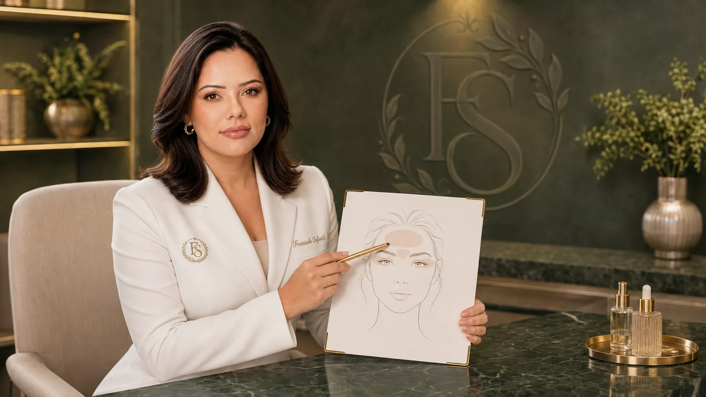
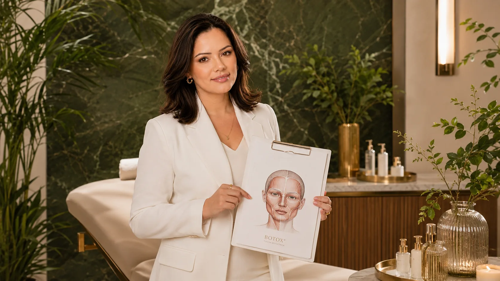
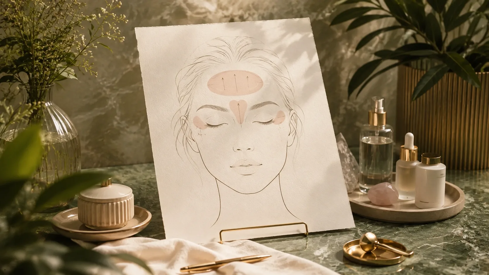
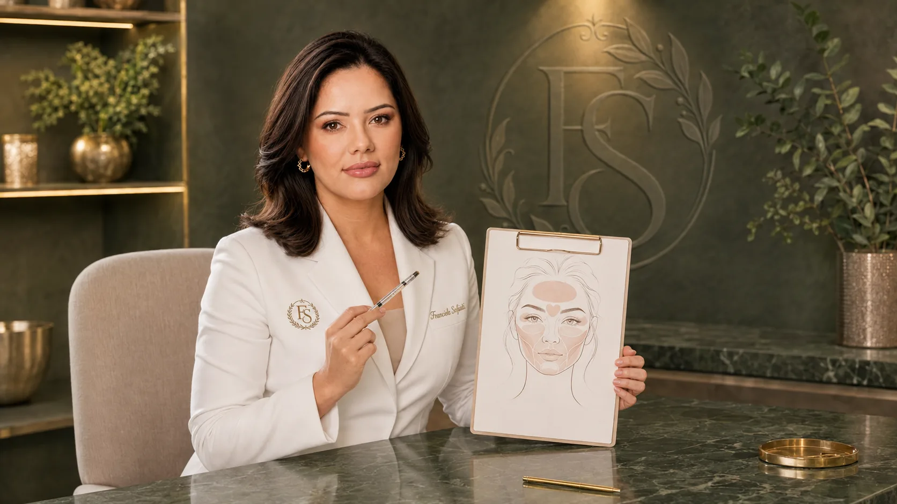
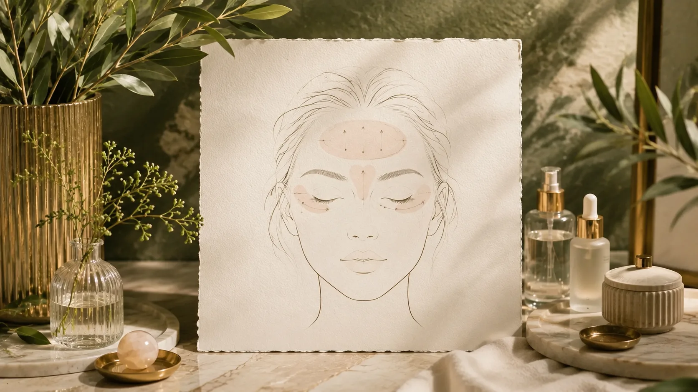
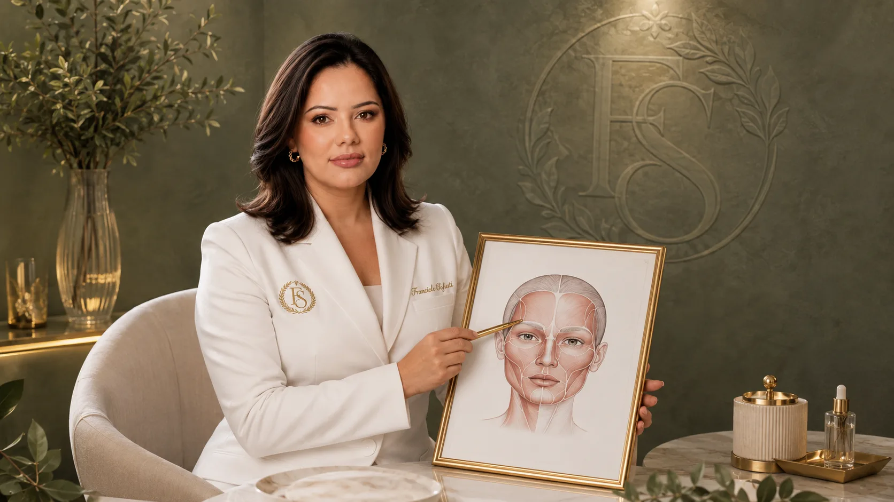
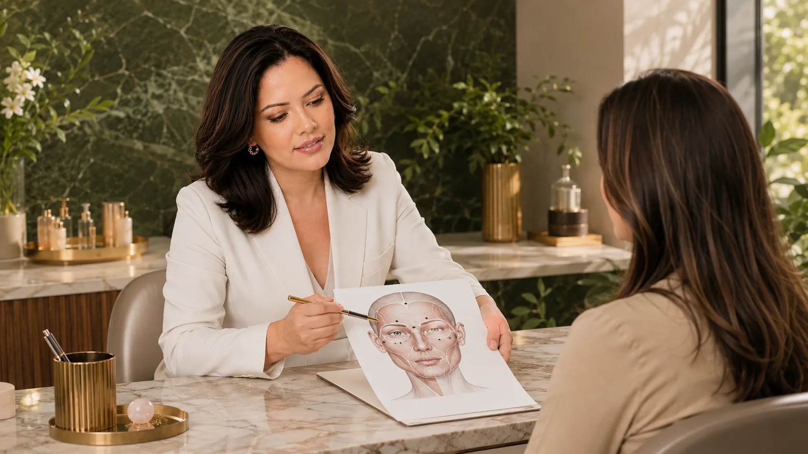
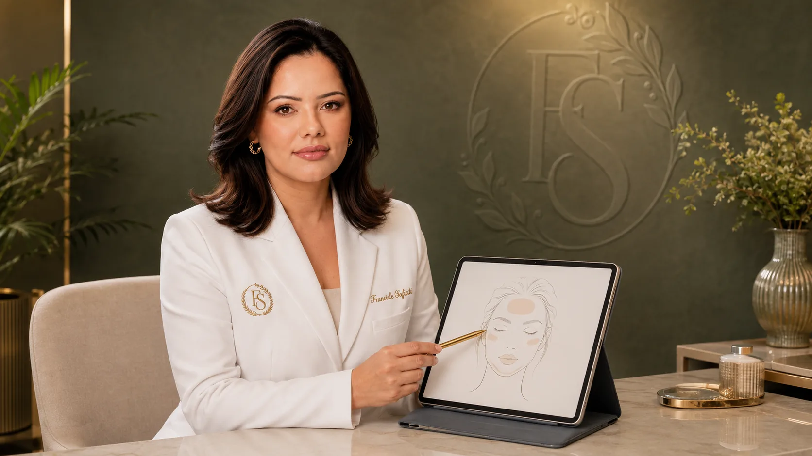

Botox in Londrina: complete guide
An educational resource for understanding results, aftercare, limits and why the decision begins with assessing your own face.
01 · Concept
 01 · Concept
01 · ConceptWhat is Botox and what is botulinum toxin?
Botox is a commercial brand. Botulinum toxin is the active substance used in different regulated products for therapeutic and aesthetic purposes.
In facial aesthetics, many people call everything Botox, but a technical conversation needs to consider product, suitability, anatomy, dose, points and safety. Botulinum toxin type A temporarily reduces communication between nerve and muscle at planned points, decreasing the strength of certain facial contractions.
In practice, that does not mean paralysing the face. It means choosing which movements are part of the concern, which movements should be preserved and what degree of softening matches that person’s expression.

02 · Simple science
How does botulinum toxin work on the face?
Facial expressions happen because muscles receive nerve signals and contract. Botulinum toxin temporarily interferes with that communication at specific points, reducing the intensity of muscle contraction.
If a fold appears because a muscle repeatedly pulls the skin, decreasing part of that force may make the line appear less during movement. Dose and location are therefore not minor details. The forehead, glabella and lateral eye area have different functions; a point placed without reading the whole face can affect brows, asymmetries and natural expression.

03 · Expression lines
Dynamic and static wrinkles change the indication
Dynamic wrinkles appear or become more visible when the face moves: forehead lines when lifting the brows, creases between the brows and crow’s feet when smiling.
Static wrinkles remain visible at rest. They may relate to repeated movement, but also to skin quality, photoageing, collagen loss, texture, hydration, volume, habits and individual history.
Botulinum toxin may help some static lines when the muscular component remains relevant, but it is not always a complete solution. In some cases, skincare, laser, technologies, biostimulation, filler or simply another moment of care may make more sense.

04 · Common areas
Areas where Botox may be considered
Forehead: horizontal lines when lifting the eyebrows. Assessment observes the frontalis muscle and the balance with brow position.
Between the brows: a tense or “angry” look when frowning. Planning involves the glabellar muscles and the depth of the marks.
Crow’s feet: lateral eye lines when smiling. Toxin can modulate contraction around the eyes, but it does not correct under-eye bags, pigmentation, significant laxity or eyelid texture on its own.
In every area, the responsible sequence is the same: understand what you notice, investigate the cause, explain what toxin can and cannot change and decide whether the intervention is proportional.
05 · Natural expression
Natural Botox is not invisible Botox
Natural expression does not mean no result. It means the change respects the face, expression, age, identity and comfort of the person receiving care.
A natural plan considers preserved movement, possible symmetry, balance between forehead and brows, smile, previous treatments and realistic expectations. The recommendation may be to treat less, treat gradually, wait or choose another approach.
Less exaggeration. More intention.

06 · Prevention and age
Preventive Botox: age alone does not define suitability
Preventive Botox usually refers to reducing repetitive movements before lines become deeply marked at rest. That idea can make sense in some contexts, but age alone does not decide.
At 20 or 25, it may be unnecessary. At 30 or 35, some people begin noticing persistent dynamic lines. At 40, movement, texture and static lines may combine. At 50+, suitability requires a broader reading of skin, support, laxity, routine and priorities.
The question is not “what is the right age for Botox?”. The question is: what is happening in your face, what bothers you, what can be modulated safely and what is worth preserving?

07 · Useful comparisons
Botox is not filler, skincare or laser
Botox acts on muscle contraction. Hyaluronic acid filler may act on volume, contour, support or hydration, depending on the product and plan. One does not automatically replace the other.
Topical skincare acts on barrier function, hydration, tolerance, pigmentation and skin quality. Laser and technologies usually target texture, pigmentation, scars or tissue stimulation. Comparing procedures helps avoid choosing a technique by name when the concern belongs to another layer.
08 · Consultation as decision
How Franciele organises the assessment
The consultation begins by listening to the line, expression, change or fear that brought you in. Then health history, previous procedures, routine, medications, events and expectations enter the conversation.
Facial movement, anatomy, skin, natural asymmetries and likely causes are observed. Possibilities, limits, risks, recovery, alternatives and aftercare are explained in clear language. Botox only makes sense when the indication is coherent. The answer may also be to wait or choose another path.
Learn how an aesthetic consultation works and why you do not need to arrive with the procedure already chosen.

09 · Procedure
What is Botox application usually like?
After assessment, the professional defines whether there is an indication, which areas may be considered and which instructions apply to your case. The skin is prepared, the points are planned and application is performed with technique appropriate to the goal.
The sensation usually involves brief pinpricks and variable local discomfort. Some people return quickly to routine; others receive specific restrictions depending on treated area, history and professional guidance.
The most important point is to follow the plan given in consultation, not a generic rule found online. If there is any question about asymmetry, evolution, discomfort or expectation, the reference should be the professional who assessed and treated the case.

10 · Results and duration
When do results appear and how long do they last?
Immediately after treatment, there may be small points of redness, sensitivity or local marks. The relaxation effect should not be judged right away.
Some changes begin progressively in the first days. The result tends to become clearer after several days, when the muscular response settles.
Duration is temporary. Clinical references often mention about 3 to 4 months, but metabolism, area, muscle strength, dose, history and product influence it. Reapplication should not follow an automatic calendar; it should consider return of movement, goal, safety and appropriate interval.
11 · Preparation and aftercare
Care before and after Botox
Before treatment, report previous procedures, reactions, allergies, sensitivities, pregnancy, breastfeeding and relevant health conditions. Bring a list of medications, supplements and recent treatments when applicable.
- Schedule: mention travel, training, important photos or upcoming commitments.
- Expectation: explain what you hope for and what you do not want to happen to your expression.
- Aftercare: follow guidance about touching the area, exercise, heat, makeup, travel and return to routine.
Do not replace the instruction you received with generic lists. If unusual discomfort, progressive worsening, important strength change, systemic symptoms or a relevant doubt appears, seek professional assessment.
12 · Safety
Contraindications, precautions and possible effects
Aesthetic procedures have risks and require honest information. Assessment considers medical history, allergies, neuromuscular conditions, local infection or inflammation, medications, recent procedures, pregnancy, breastfeeding and previous reactions.
Temporary possibilities include local discomfort, redness, swelling, small bruises and headache in some people. Less common events may involve asymmetry, undesired muscle effect, eyelid or brow droop and other issues that require follow-up.
Severe complications are rare, but symptoms such as difficulty breathing, swallowing or speaking, significant weakness or allergic reaction require immediate attention. This page does not replace assessment, prescribing information, professional guidance or medical care.
13 · Results with context
Botox before and after: evidence, not promise
Before-and-after photographs can help illustrate one kind of evolution, but they cannot predict your response. Light, angle, expression, timing, treatment stage, biology, routine and image selection all change how a result is read.
When images are used, they should be contextualised and authorised. The goal is not to create an expectation of identical results, but to show responsibly what was observed in one specific person.
14 · Price in Londrina
How much does Botox cost in Londrina?
The price of Botox in Londrina should not be defined generically on an educational page because suitability and planning change from person to person. Values may vary according to treated areas, product, quantity needed, anatomical complexity, follow-up and whether toxin is truly the best option.
Price should not be the only criterion. A cheap, poorly indicated or poorly explained procedure can cost more in discomfort, insecurity and a result that does not match your expression. If you want to understand which approach makes sense for your case, begin with assessment.
15 · How to choose
Where to have Botox in Londrina?
Look for an experience that explains the reasoning, not only offers the procedure. Check professional qualification, registration, individual assessment, clear explanations about limits, risks, alternatives and aftercare, regulated product, documentation and follow-up.
Be cautious with promises of guaranteed results, a perfect face or total absence of adverse effects. Value someone willing to say when Botox is not the best answer.
16 · Keep researching
Continue with context
- Aesthetic consultation — the starting point for suitability, preparation and decision-making.
- Treatments — understand why a procedure listed on the site is not an automatic recommendation.
- Before and after — how to view results without turning one image into a promise.
- Privacy — responsible use of information and images in aesthetic care.
17 · External sources
Sources and references for further reading
Quality information also means knowing where to research. To deepen your understanding of botulinum toxin, safety, indications and care, these independent medical and regulatory sources are useful.
- ANVISA — Safety and information about botulinum toxin
- NCBI Bookshelf — Botulinum Toxin
- NCBI Bookshelf — Botulinum Toxin Treatment of the Upper Face
- DailyMed — BOTOX (onabotulinumtoxinA)
- American Society for Dermatologic Surgery — Neuromodulators
These sources are educational and complement the information in this guide. They do not replace individual assessment, professional guidance or official information for the product used in a procedure.
FAQs
Frequently asked questions about Botox
Does Botox remove expression?
A responsible plan aims to modulate, not freeze. Appropriate movement and natural expression are part of the goal.
Is Botox the same as filler?
No. Botox acts on muscle movement; filler addresses volume, contour, support or hydration depending on the case.
How long does Botox last?
Duration varies. Many references cite about 3 to 4 months as an approximate range, never as an individual promise.
When does Botox start working?
The effect is usually not instant. It tends to appear progressively and settle after several days.
Who cannot have Botox?
Health history, medications, pregnancy, breastfeeding, neuromuscular conditions and local conditions must be assessed before any decision.
Can Botox cause ptosis?
Eyelid or brow droop is a possible, though uncommon, event and reinforces the importance of anatomical assessment and follow-up.
Can I have Botox on the same day as the consultation?
It depends on assessment, preparation, health information and shared decision-making. A consultation should not be treated as an obligation to proceed.
What if Botox is not indicated for me?
The answer may be to wait, simplify your routine, prepare the skin or choose another treatment that better fits your concern.
Contact
Begin with your question
You can arrive with a line that bothers you, a question about ageing, fear of looking artificial or uncertainty about Botox. The consultation exists to turn that question into a clearer next step.
Contact
Ask about Botox or another concern
Send your question with the information you feel comfortable sharing. The reply goes to the contact details you provide.